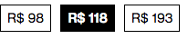

Esse Widget tem como função principal replicar a funcionalidade de radio button, tanto para passar dados em formulários como para disponibilizar opções distintas de forma customizada.
É possivel instanciar varias opções dentro de varios grupos distintos.
| Versão | Preview |
|---|---|
| Unica |  |
Esse widget precisa de atributos obrigatórios definidos em sua tag, para manter a estrutura HTML inalteravel e definir seu grupo, valor e label.
É possivel também passar conteudo dentro do widget, para ser renderizado dentro do markup do mesmo.
<landing-radio
name="groupName"
label="label"
value="10"></landing-radio>
| Código | Nome | Descrição | Campo Obrigatório | Exemplo |
|---|---|---|---|---|
| name | Nome do Grupo | Grupo ao qual esse radio pertende | Sim | group1 |
| label | Label do Input | Texto que aparece no widget | Sim | R$ 118 |
| value | Valor do Radio | Valor da opção do radio que for relecionado | Sim | 118 |
| is_selected | Selecionado | Determina se esse radio estara selecionado dentro de um grupo | Não | true |
Esse Widget só tem uma aplicação, com uma configuração de responsividade ja formatada.
<landing-radio
name="groupName"
label="label"
value="10"></landing-radio>